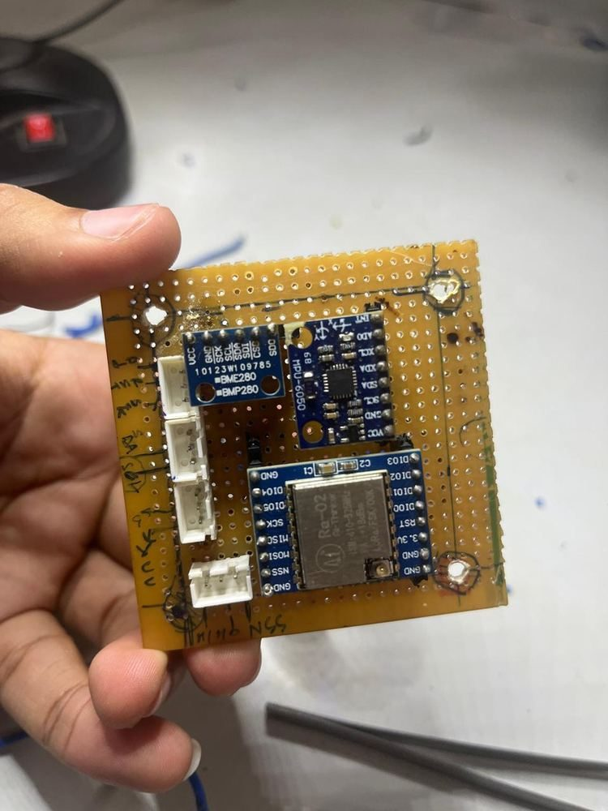
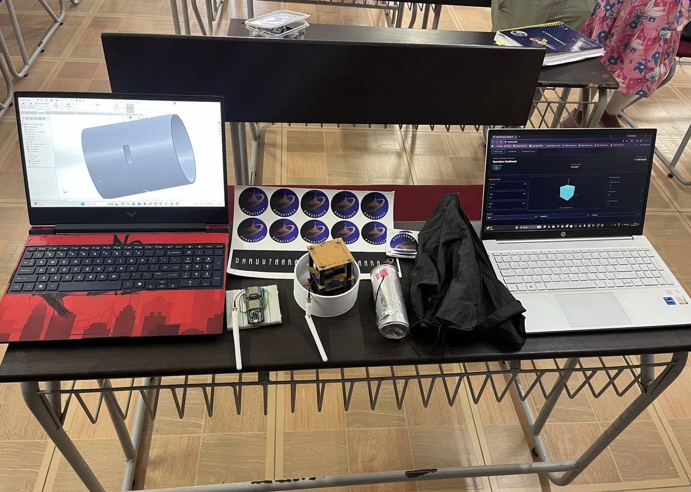
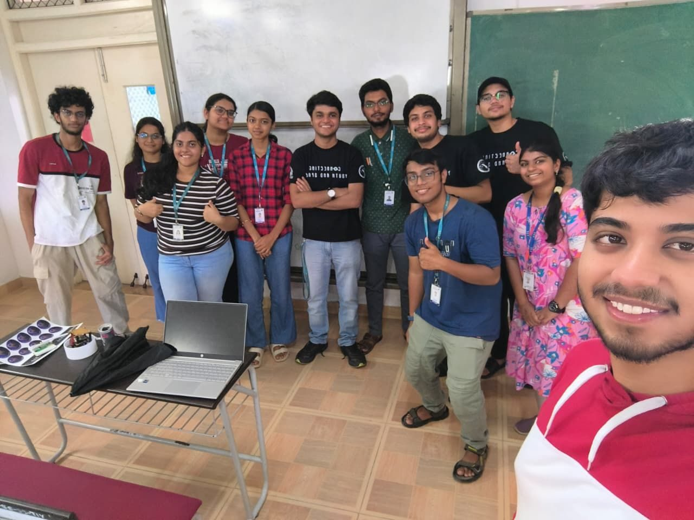

cansat — atmospheric data logging & telemetry
// mission: shrink a fully functional satellite to the size of a soda can — log atmospheric data and stream real-time telemetry to a ground station throughout descent.
As Project Lead of team DhruvTaara at SEDS VIT Chennai, I led 15 members across the full mission system. My direct contribution was the avionics + embedded firmware; I architected the surrounding stack — specifying the telemetry schema and panel structure for the ground station, and the design requirements for the cylindrical CAD housing — while teammates implemented those subsystems.
The operational concept: deploy from a drone at altitude, descend under a custom parachute, sample atmospheric and motion data continuously, and downlink it live over LoRa to a custom web dashboard.
Hardware: Built on a LOLIN D32 (ESP32) with a BMP280 for pressure/temperature, an MPU6050 6-axis IMU, a LoRa transceiver, and a 350 mAh LiPo with onboard charging. Perf-board assembly was chosen over breadboarding to maximise space efficiency within the can-sized payload and ensure connections could survive landing impact. The parachute was hand-fabricated from umbrella material.
Firmware: Raw sensor data from low-cost IMUs and barometers is notoriously noisy during descent. A multi-stage filtering pipeline was implemented: Madgwick filter for IMU orientation fusion at 100 Hz (correcting accelerometer/gyro drift in real time), a low-pass filter for high-frequency vibration rejection on the accelerometer axes, a moving average for BMP280 altitude smoothing at 10 Hz, and MAD-based outlier removal before transmission. Processed telemetry — attitude, pressure, temperature, altitude, descent rate — is downlinked at 5 Hz over LoRa 433 MHz.
Mission stack (team): Under architectural lead, the team built two adjacent subsystems.
Field tests: Two independent field tests were conducted. The first involved drone deployment at altitude, validating successful parachute deployment and controlled descent to ground. The second, conducted separately, verified telemetry transmission range — a continuous data stream was maintained over a 500 m horizontal range. Post-flight, the logged dataset was used to visualise atmospheric variation against altitude and assess aerodynamic stability of the structure.
Takeaway: Direct ownership of the avionics + embedded firmware — component selection, perf-board fabrication, real-time signal processing, field deployment, data analysis — plus a systems-architect role across the full mission stack. The foundation for everything I want to build next in aerospace.


